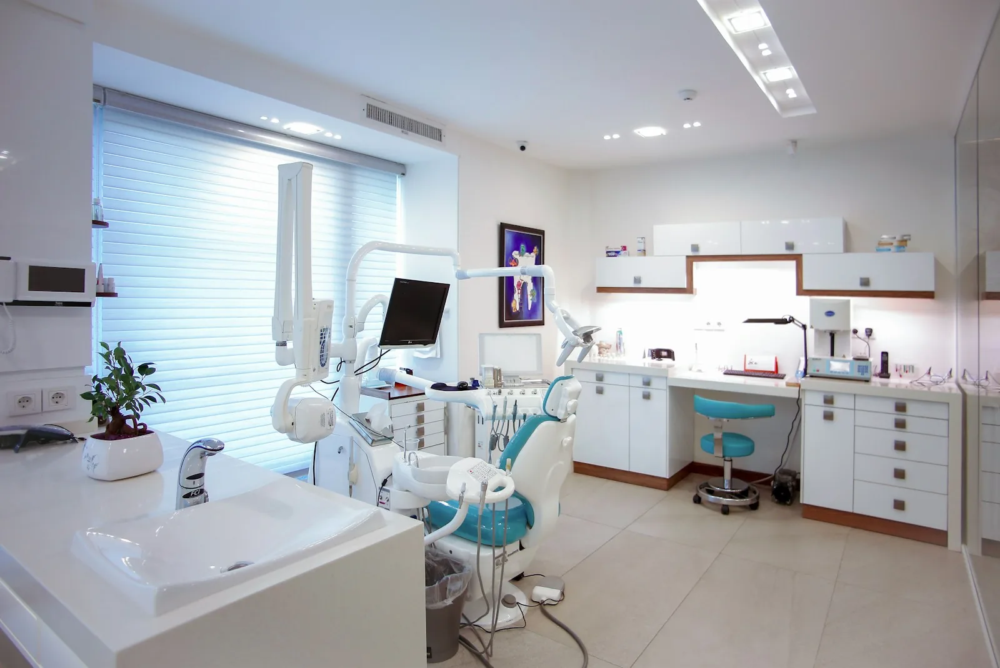
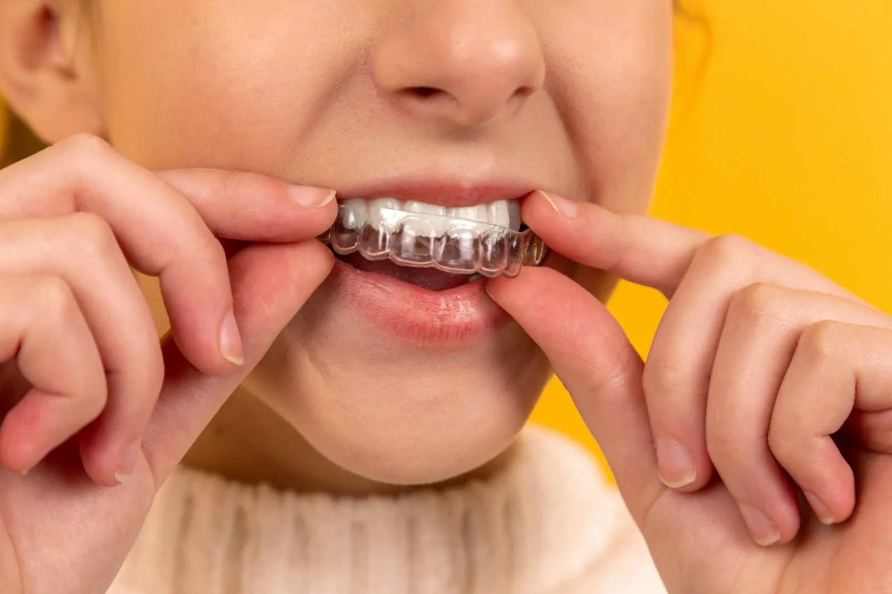
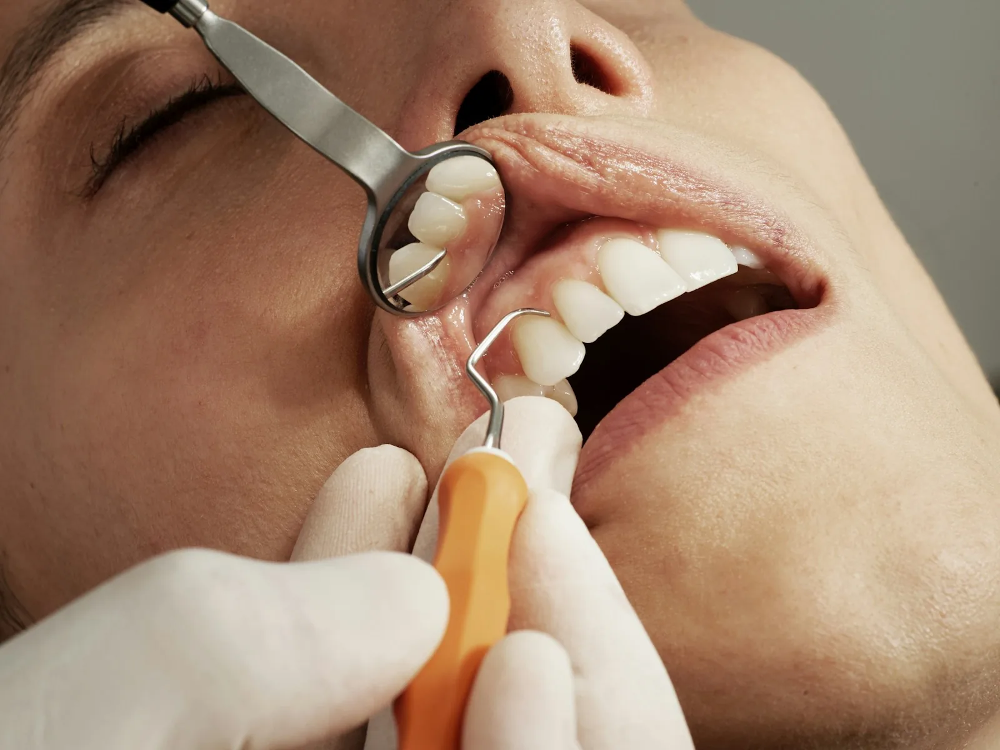

✦
Keep the good
things going.
Check-ups & hygiene
From everyday care to the change you’ve been thinking about.
Let’s find a way forward that feels right for you.

You bring the questions. We make space for them. Explore your options, understand the costs and take the next step at your own pace.
From the foundations to the finishing touches.
SCROLL TO DISCOVER →
Check-ups & hygiene

02 — ALIGNMENTClear aligners
Whitening & composite bonding

04 — YOUR PLANA consultation, without the rush
Illustrative journeys. Individual care.
An example of how a clinic can explain a patient’s goals, discuss options and document a treatment journey.
Visual simulation · Not a patient or clinical resultFrom the first question to reviewing the options: a clear, step-by-step story helps people understand what comes next.
Illustrative case · Stock photographyA place for patients to share their experience.
These stories demonstrate the design.
“I wanted to understand my options before making a decision. Having the time to ask questions made all the difference.”
“The most reassuring part? Knowing what the next step would be.”
A question, a concern or a change you’re considering. Start wherever you are.
A consultation is the place to discuss suitability, alternatives, risks and costs.
Take away a clear plan. Your decision should feel informed, never hurried.
On a real clinic website, this is where the team would explain how they support nervous patients and what to expect at a first visit.
Our fees page shows sample prices for this design concept. A real clinic would provide a personalised written estimate after an assessment.
This is a fictional clinic website. You can try the consultation form, but no appointment is booked and no personal information is sent or saved.
No. The comparison is an illustration, the cases and quotes are sample content, and the photographs and video are stock media.